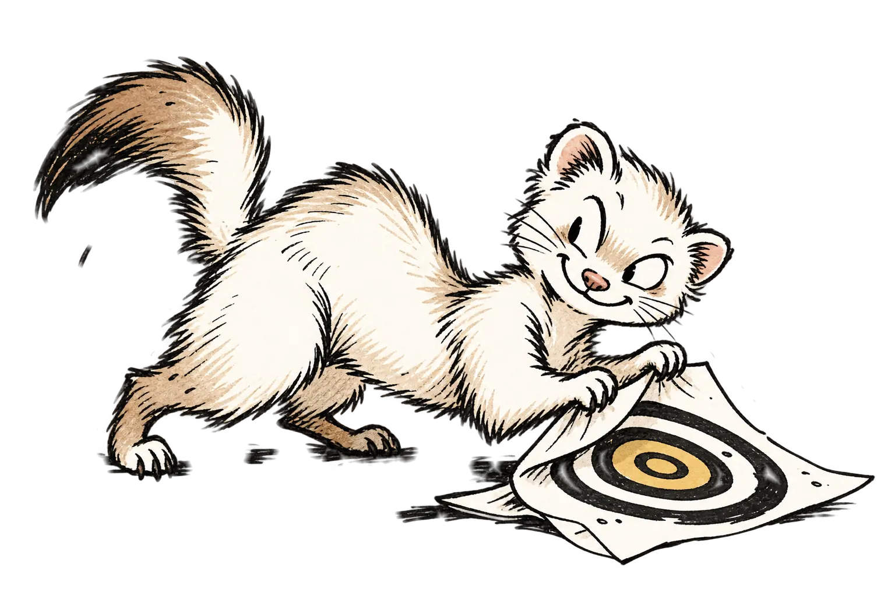

Once the little monster reached the old bridge, the moon was rising. He kept walking until he saw the village.
The next morning, everything changed.
Two Pages, Two Layouts
You already have a cover and have practiced text boxes. Today you will create two interior story pages that look different but both read easily. You will explore why books, magazines, and websites arrange information in different ways. Illustrations come later.
We will compare how books, magazines, and websites arrange words, then build two different interior layouts in Google Slides so that readers can follow our stories clearly.

§126.18(c)(12)(H) — I can use publication tools to build clear digital story pages for a reader.
§126.18(c)(12)(C) — I can choose and use Slides tools that fit a page-layout task.
§126.18(c)(12)(A) — I can use words like margin, column, hierarchy, alignment, and whitespace to explain design choices.
Printed books were designed around paper, binding, and the reader's needs. A novel often uses one steady reading path. A magazine may offer several short sections to explore. A children's story often leaves more space for pictures and uses fewer words at a time. Different purposes lead to different layouts.
Once the little monster reached the old bridge, the moon was rising. He kept walking until he saw the village.
The next morning, everything changed.
A report from the valley
Strange lights have appeared near the bridge. Several visitors stopped to investigate.
At a glance
Three witnesses
One strange light
More facts inside
These are original teaching diagrams, not historical magazine or book reproductions.
Complete Question 1.
Mastery question 1 · Explain your reasoning
The traditional novel and the magazine use different arrangements. Identify ONE visible difference and explain how it helps the intended reader of either publication. Answer from the samples.
A margin is the open space around a page. Line length is how far each line stretches before it wraps. Alignment is how text lines up. A continuous story needs an obvious reading order.
A tiny text box causes words to wrap after only a few words. A text box too close to the slide edge can look crowded or hide text. Wider text boxes, consistent alignment, and reasonable margins improve readability.
Bo walked into the quiet woods with a lantern.
Bo walked into the quiet woods with a lantern.
Watch the tool demonstration: In Slides choose Insert → Text box, drag the box, paste text, then select the box border to move or resize the container. Check that nothing is clipped.
Mastery question 2 · Explain your reasoning
A sample children's book page has a long passage in a tiny text box, making each line only two words wide. Explain TWO specific layout changes that would improve reading and why.
On a temporary blank slide, make one text box with a short sentence. Select its border and widen it until the sentence wraps comfortably. Delete the practice slide afterward.
Use the same story you selected earlier. Keep the author's original words and select two consecutive sections for your two pages. You do not have to copy the entire story onto one slide.
Mastery question 3 · Explain your reasoning
In a fictional Slides page, the last two words of every line disappear off the right edge. Which part of the text box would you select and what adjustment would you make? Explain why that fixes the problem without changing the story.
Magazines developed columns, headlines, and side notes to organize different kinds of information on printed pages. Websites borrowed some of these ideas but also make room for scanning, scrolling, and screens of different sizes.
Hierarchy means what readers notice first. Proximity keeps related material together. Whitespace provides visual breathing room. Children's books can use those ideas without making the story hard to follow.
Feature
Readers start with a headline and explore short sections.
Sidebar
Fast facts are separated from the article.
One clear introduction to the article.
Watch the demonstration: move a second text box by its border and align it with another box. Two boxes still need one obvious first-to-second reading order.
Compare one wide paragraph with two aligned smaller blocks. Identify where a reader would begin, then where the reader would look next. No troubleshooting or extra slide required.
Bo entered the dark forest and heard a sound.
Extra facts
Lanterns glow.
Forests are quiet.
More news below!
Bo carried a glowing lantern into the quiet woods.
He heard a tiny cry.
Mastery question 4 · Explain your reasoning
Examine the labelled magazine-style and children's-book specimens. Which would be easier for a young child to follow as one continuous story passage? Give TWO visible reasons and suggest ONE change that would help the less suitable example.
§126.18(c)(12)(H) Can you make a readable publication page? §126.18(c)(12)(C) Can you choose the right Slides tools? §126.18(c)(12)(A) Can you explain a layout using the right vocabulary? Consider which skill needs more practice.
Optional, ungraded feedback ↗Checkboxes are a personal reminder on this page, not an assignment submission.
Same story. Two design eras. Which one serves a reader?
Look back at the novel and magazine samples. Follow each reading path with your finger: a calm, continuous paragraph versus headline and divided regions.
Optional twist: Add pretend era labels; make a case for your favorite.
Can a reader navigate your page without a treasure map?
Web articles often use a headline and grouped sections. Ask what the eye notices first, second, and third; a clear reading path beats decorative clutter.
Optional twist: Try a sidebar. Does it clarify the story or steal attention?
Save an almost-unreadable page from the Squeeze Monster.
Margins, gaps, and alignment create breathing room. Look at the narrow/comfortable text examples above before your rescue operation.
Optional twist: Let a classmate find three fixes before showing your notes.